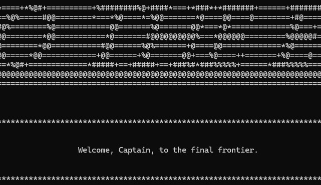

Languages
C++
Rising Star Developer Portfolio
I'm an ambitious programmer with an eye for detail and design. I love working on games and plan to one day have my own indie studio.
About Me
I have always loved games and even as a child would create games to play with my friends albeit much simpler. Over time, I got into Dungeons and Dragons and would eventually become a dungeon master for my own campaigns. From youth until now, I have designed and built games that were for table top but I always wanted to take the next step and develop video games. This led me to Full Sail University where I learned to code in C++ and developed my first game, "Into the Ether". I hope to continue working on it as well as other game projects as I discovered a love for programming and a deep understanding for logic. I would say my greatest strength thus far as a developer is my ability to quickly figure out and debug errors within a program.
C++
Visual Studio, Git, GitHub, Obsidian
Object-oriented programming, pointers, debugging, and clean code
Featured Work
You won't want to miss what I've been up to.

C++ Console Application
Into the Ether was inspired in part by Star Trek and Space Odyssey and plays out similar to Oregon Trail. The objective of the game is to get your ship full of passengers from Earth to Centauri Prime. Along the way you encounter new planets, and aliens, some hostile. Manage your fuel, handle ship errors, and keep your ship in one piece to reach the end.
One of the biggest challenges I faced was with inventory. Not just how items would be used on the player's ship but also how I would create a way out if the player decided at the last minute to not use an item. I solved this by adding an Enum for item types and building a switch case around it to adjust how the item was used. I also added validation so a player couldn't waste a repair or refuel, for example, if they were full. They would instead get a message saying they couldn't use the item and why. The switch would also remove items of every type each time they were used, except one; the Exit type. I created this so it would end the selection loop without using an item.
Contact
Replace the links below with your professional profiles. Do not publish your home address, student ID, personal phone number, or other private information.